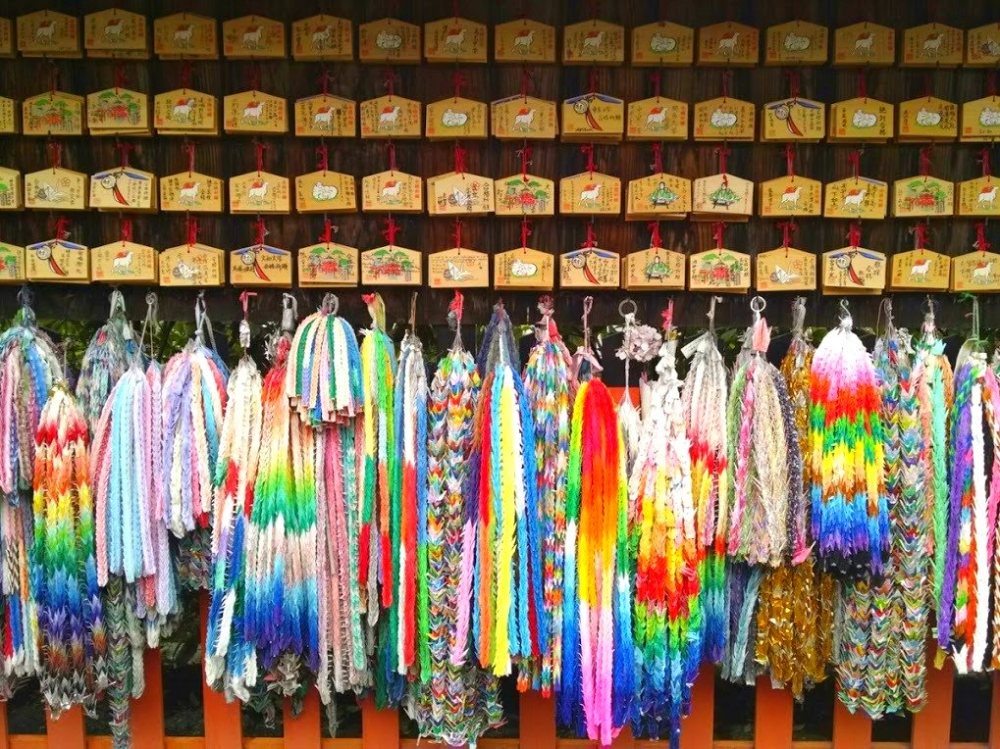
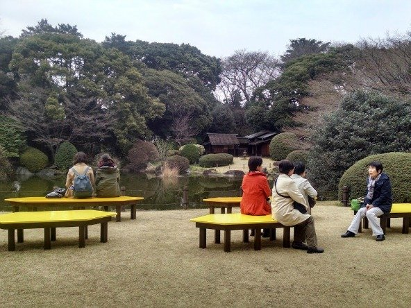

Photo Tour of Japan
I wish I could bottle up the quiet whisper of bamboo bending in the wind.
Japan is an absolutely stunning place. I left a piece of my heart there. It's a fascinating country that combines modernity with traditionalism. Urban efficiency with natural beauty. East meets West. It was not the easiest place to avoid animal products but it was still lovely to visit and soak up a very different culture from my own.
I feel so fortunate to have experienced the omnipresence of sakura, or cherry blossoms, in Japan. The whole country seems lighthearted and celebratory in the springtime.
One of my favorite parts of traveling is getting to experience another country's culinary culture. Even though I eat plant-based Japanese food while at home (sushi rolls stuffed with vegetables, savory miso-based soups, steamed edamame to name a few) Japan is not a friendly place for vegetarians.
I loved taking cooking classes and exploring the traditional foods of the other Asian countries we visited, however, the most salient aspect of my time in Japan was its sheer beauty. For that reason, I wanted to share some of the pictures I had so much fun taking there. I hope it conveys how delightful and intriguing spending time in Japan was for me.
Thousands of paper cranes folded, stacked on top of each other and hung as an homage to the Shinto god of rice.
 These giant eggs were an installation at an outdoor museum celebrating the reciprocal influence between Eastern and Western art.
These giant eggs were an installation at an outdoor museum celebrating the reciprocal influence between Eastern and Western art.The crosswalks of the biggest intersection in the world's biggest city seems like a strangely organized and choreographed event.
A mossy garden keeps Japan looking green and lush.
A sunset over the sea and hundreds of red gates lend to the historical feel of Japan's smaller towns.
Simple vegetable soba with mushrooms, pickled greens and spring onions warmed me up on a chilly day.
Somebody felt the little bird statues outside a subway station needed as much protection from the weather as the citizens of Tokyo.
Teenagers dressed in costume express their love of anime in Harajuku. Lovers show their affection to one another by fastening a lock to a fence. One of the many rituals borrowed from Paris life.
A popular cherry blossom viewing spot turned into a lively, outdoor food festival once the sun went down.
We traveled back in time when we visited an ancient tea house along a footpath highway. Hot mochi, fermented rice drinks and yellow flowers all made me pause to appreciate the simple moments.
Sunlight beamed through this stained glass tower as we ascended the spiral staircase to the top.
The politeness and respect that characterizes Japanese culture makes me envy what it would be like to be a bike commuter there.
Enjoying a gray afternoon outside the Tokyo National Museum.
Brilliantly colored koi fish swam around our feet as we stepped stones to a waterfall.
No one speaks on the typically crowded Tokyo subway that is so silent you could hear a pin drop.
Pink and white lanterns adorn the street corner at a cherry blossom festival and bamboo can't help but seem elegant and gentle as it bends in the breeze.
A temple peeks out of the misty mountains in Kyoto.
I was jealous this netted playground was kids only. Evan bought green tea from a vending machine. And we enjoyed hot spring water & floating citrus fruits as a nice reprise from hiking.
This barista brewing coffee looks like a scientist in a laboratory.
My brother rests in our traditional ryokan style hotel. The tatami mats and futons were fluffy, comfy and warm.
Tokyo is the most pedestrian friendly place I've ever been. Each city block is full of internal walking streets totally removed from car traffic. I loved it!